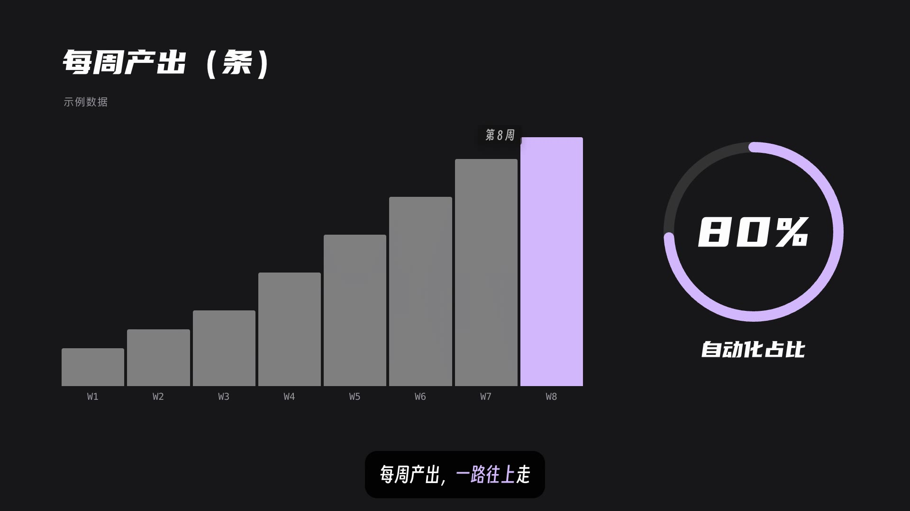
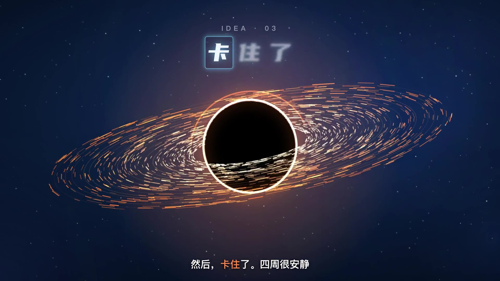
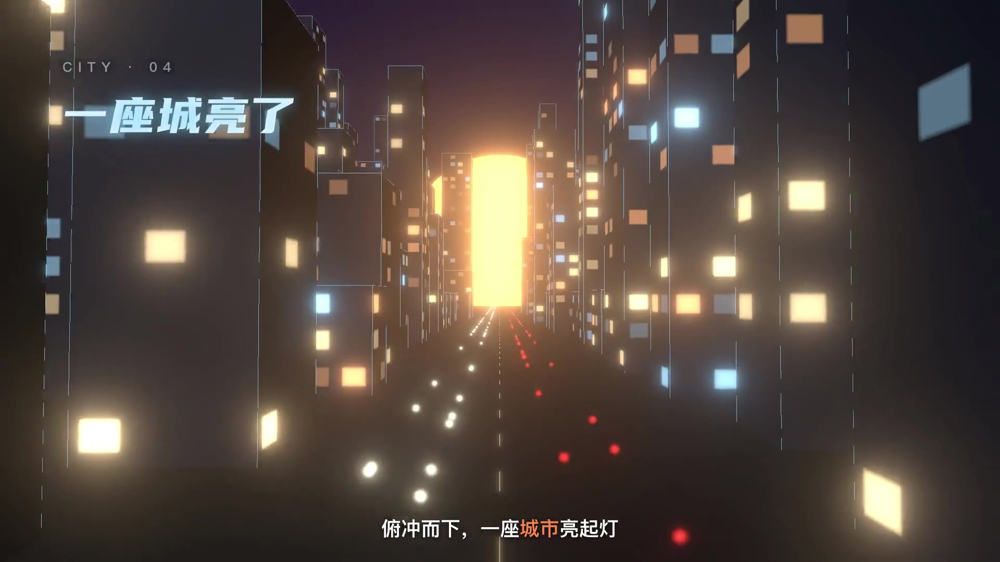

所有分镜摆在同一块画布上，换内容 = 镜头走过去
01发牌入场 · 原位放大
deal-in / zoom-here



02骨架填充 · 背景虚化
skeleton / push-back数据看板本周
总览成片素材发布

成片数42
完播率38%
新内容来了
原来那层往后退 6%、变虚、变暗
03景深分层
depth / rack-focus中层 · 卡片
焦点在谁身上，谁最清楚
近层 · 标注
04纵深穿梭
tunnel + fly05环筒螺旋
helix + helix-spin
06三维翻转
flipboard + flip-to01白紫科技theme-violet
02黑金电影theme-gold
03剪纸拼贴theme-paper
04深空粒子theme-space
07放大让位 · 背景换色
fan + pick / bg-tint08切片换图
slices + slice-to09走进画面
road + walk① 写稿
② 配音
③ 画面
④ 发布
换内容 = 镜头走过去
fx-world.js · 21 个新动效 · 7 个新组件